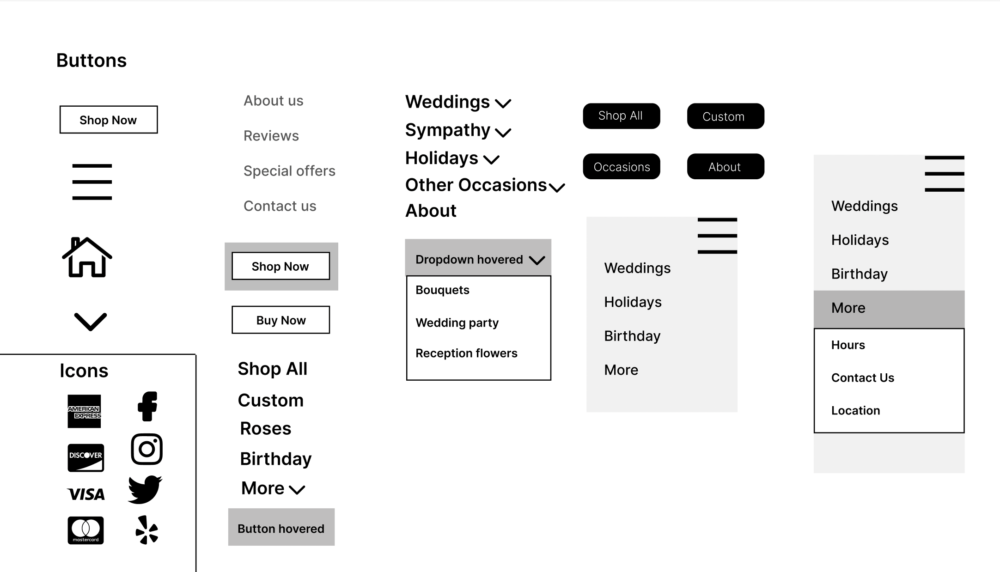

Frey & Florist Greenhouses is a Providence-based flower shop selling through both brick-and-mortar and e-commerce channels. The website, however, has a number of usability issues. Here are three frames of the homepage annotated with what I find to be the main issues their current website:
As detected using WebAIM WAVE, there are over 20 contrast errors on this homepage alone. I would agree that these contrast areas are very obvious. Personally, I had a bit of a challenging time reading the options in the navigation bar, and I had to adjust my brightness in order to view it properly. Additionally, WebAIM WAVE flagged the high volumne of alt tags; when using Inspect Element on the homepage, I noticed that a number of the alt tags have poor descriptions for the images they're describing. For example, the alt tag for the "Custom Arrangements" only says "Custom Flower Design" with no mention that this is a product offering.
Before I developed my hifi designs or the actual redesigned website, I started with lofi designs designed using Balsamiq for
three types of screen views: desktop, tablet, and mobile. The yellow "sticky" notes indicate how my lofi design
address the issues I found in Frey's original website design.
Note: The black dots between the frames for each device
represent the scrolling aspect; I chose to cut out some of the original wireframe since the images would be too long and would
not provide any additional insight as they would show repeated elements.
In summary, these lofi wireframes address the three main issues I had listed previously surrounding usability and memorability of the website.
Before starting my hifi designs and development, I created a visual design style guide in Figma that displayed the main colors, typography, and reusable components used throughout my hifi designs.
Please find my responsive redesigned website here. I did ulimately have some issues trying to implement the hamburger menu for the smaller screen sizes; this is something I plan to explore further when I revise this webpage later on in the semester and have more web dev experience.